Menus
PCSX-Redux menus
The menu bar holds some informations :
- CPU mode
- Game ID
- ImGui FPS counter (not psx internal fps)
File
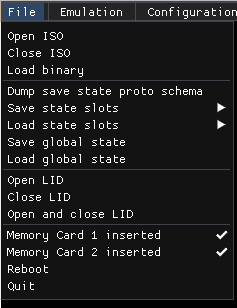
- Open ISO
- Close ISO
- Load Binary
- Dump save state proto schema
- Save state slots
- Load state slots
- Save global state
- Load global state
- Open Lid : Simulate open lid
- Close Lid : Simulate closed lid
- Open and Close Lid : Simulate opening then closing the lid
- MC1 inserted: Insert or remove Memory Card 1
- MC2 inserted: Insert or remove Memory Card 2
- Reboot : Restart emulator
- Quit
Emulation
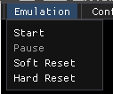
- Start (F5): Start execution
- Pause (F6): Pause execution
- Soft reset (F8): Calls Redux's CPU reset function, which jumps to the BIOS entrypoint (0xBFC00000), resets some COP0 registers and the general purpose registers, and resets some IO. Does not clear vram.
- Hard reset (Shift-F8): Similar to a reboot of the PSX.
Configuration
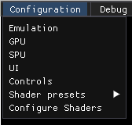
- Emulation : Emulation settings
- GPU : Graphics Processing Unit settings
- SPU : Sound Processing Unit settings
- UI : Change user interface settings (such as font size, language or UI theme)
- Controls : Edit KB/Pad controls
- Shader presets : Apply a shader preset
- Configure shaders : Show shader editor
Debug
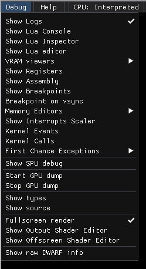
Help
- Show ImGui demo
- About
GPU information
The 'About' dialog available in the 'Help' menu has an 'OpenGL information' tab that displays information on the GPU currently used by the program, such as the supported OpenGL extensions.
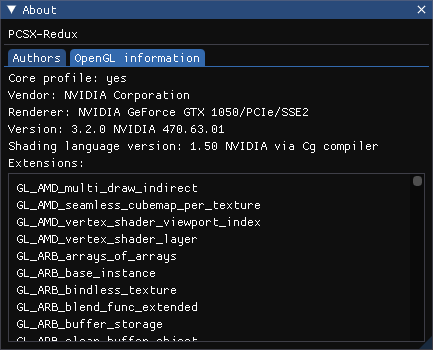
Compiling
Compiling PCSX-Redux
Getting the sources
The only location for the source is on github. Clone recursively, as the project uses submodules:
git clone https://github.com/grumpycoders/pcsx-redux.git --recursive.
Windows
Install Visual Studio 2019 Community Edition.
Open the file vsprojects\pcsx-redux.sln, select pcsx-redux -> pcsx-redux, right click, Set as Startup Project, and hit F7 to build.
The project follows the open-and-build paradigm with no extra step, so no specific dependency ought to be needed, as NuGet
will take care of downloading them automatically for you on the first build.
Note: If you get an error saying hresult e_fail has been returned from a call to a com component, you might need to delete the .suo file in vsproject/vs, restart Visual Studio and retry.
Openbios
Using Visual Studio Code, one can use the task "make_openbios" to compile: CTRL-P then task make_openbios to compile.
Linux
Compiling with Docker
Run ./dockermake.sh. You need docker for this to work.
1 2 3 4 | |
You will also need a few libraries on your system for this to work. Check the Dockerfile for a list of library packages to install.
Compiling with make
- Debian derivatives ( for full emulator compilation ):
1 | |
- Arch derivatives :
1 | |
You can then just enter the 'pcsx-redux' directory and compile without using docker with make.
If you have a different mips compiler, you'll need to override some variables, such as PREFIX=mipsel-none-elf FORMAT=elf32-littlemips.
Openbios
Building OpenBIOS on Linux can be done with docker : ./dockermake.sh openbios,
or using make, with the g++-mipsel-linux-gnu package installed ; make openbios.
MacOS
You need MacOS Catalina with the latest XCode to build, as well as a few homebrew packages.
Run the brew installation script to get all the necessary dependencies.
Run make to build.
Compiling OpenBIOS will require a mips compiler, that you can generate using the following commands:
Openbios
1 2 | |
Then, you can compile OpenBIOS using make -C ./src/mips/openbios.
Compiling PSX code
If you're only interested in compiling psx code, you can clone the PCSX-Redux repo;
1 | |
pcsx-redux/src/mips/psyq/ folder as per these instructions.
You can also find the pre-compiled converted Psyq libraries online.
Getting the toolchain on Windows
Download the MIPS toolchain here : https://static.grumpycoder.net/pixel/mips/g++-mipsel-none-elf-10.3.0.zip
and add the bin folder to your $PATH.
You can test it's working by launching a command prompt and typing mipsel-none-elf-gcc.exe --version. If you get a message like mipsel-none-gnu-gcc (GCC) 10.3.0, then it's working !
Getting the toolchain on GNU/Linux
Debian derivative; Ubuntu, Mint...
1 | |
Arch derivative; Manjaro...
The mipsel environment can be installed from AUR : cross-mipsel-linux-gnu-binutils and cross-mipsel-linux-gnu-gcc using your AURhelper of choice:
1 | |
Cli & flags
Command Line Flags
You can launch pcsx-redux with the following command line parameters:
The parsing code doesn't care about the number of dashes in the parameter's flag, so '-' can be used as well as '--', or any number of dashes.
| Flag | Meaning |
|---|---|
-dumpproto |
Dump the protobuf schemas for PCSX-Redux on stdout and exit immediately. |
-run |
Begin execution immediately on startup. |
-stdout |
Redirect log output to stdout. |
-lua_stdout |
Redirect Lua's console output to stdout. |
-logfile |
Specify a file to log output to. |
-bios |
Specify a BIOS file. |
-testmode |
Interpret internal API's pcsx_exit() command as a request to exit the emulator instead of pausing, and close the emulator. Implies -safe, -no-gui-log, and will also disable first chance exceptions. Use only when doing unit testing. |
-exe |
Load a PSX exe. |
-loadexe |
Load a PSX exe. |
-iso |
Load a PSX disk image (iso, bin/cue). |
-loadiso |
Load a PSX disk image (iso, bin/cue). |
-memcard1 |
Specify a memory card file to use as memory card slot 1. |
-memcard2 |
Specify a memory card file to use as memory card slot 2. |
-pcdrv |
Enable the pcdrv device interface. (Access PC filesystem through SIO). |
-pcdrvbase |
Specify base directory for pcdrv. |
-safe |
Resets configuration to defaults. |
-interpreter |
Use the interpreter CPU core. |
-dynarec |
Use the dynamic recompiler CPU core. |
-debugger |
Activates the debugger. Will change the saved setting. |
-no-debugger |
Deactivates the debugger. Will change the saved setting. |
-trace |
Activates the CPU trace logging. Will change the saved setting. |
-no-trace |
Deactivates the CPU trace logging. Will change the saved setting. |
-no-gui-log |
Fully disables logs to be sent to the GUI. |
Gdb-server
GDB server
The GDB server allows you to set breakpoints and control your PSX program's execution from your gdb compatible IDE.
Enabling the GDB server
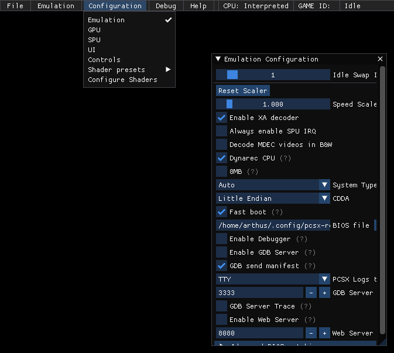
In PCSX-Redux: Configuration > Emulation > Enable GDB server.
Make sure the debugger is also enabled.

GDB setup
You need gdb-multiarch on your system :
Windows
Download a pre-compiled version from here : https://static.grumpycoder.net/pixel/gdb-multiarch-windows/
GNU/Linux
Install via your package manager :
1 2 3 4 5 | |
IDE setup
MS VScode
- Install the
Native debugextension :
https://marketplace.visualstudio.com/items?itemName=webfreak.debug

- Adapt your
launch.jsonfile to your environment :
A samplelanuch.jsonfile is available here.
This should go inyour-project/.vscode/.
You need to adapt the values of "target", "gdbpath" and "autorun" according to your system :
target
This is the path to your .elf executable :
1 | |
gdbpath
This the path to the gdb-multiarch executable:
1 | |
autorun
1 2 3 4 | |
Make sure that "load your-file.elf" corresponds to the "target" value.
By default, using localhost should work, but if encountering trouble, try using your computer's local IP (e.g; 192.168.x.x, 10.0.x.x, etc.)

Geany
Make sure you installed the official plugins and enable the Scope debugger.
To enable the plugin, open Geany, go to Tools > Plugin manager and enable Scope Debugger.
You can find the debugging facilities in the Debug menu ;
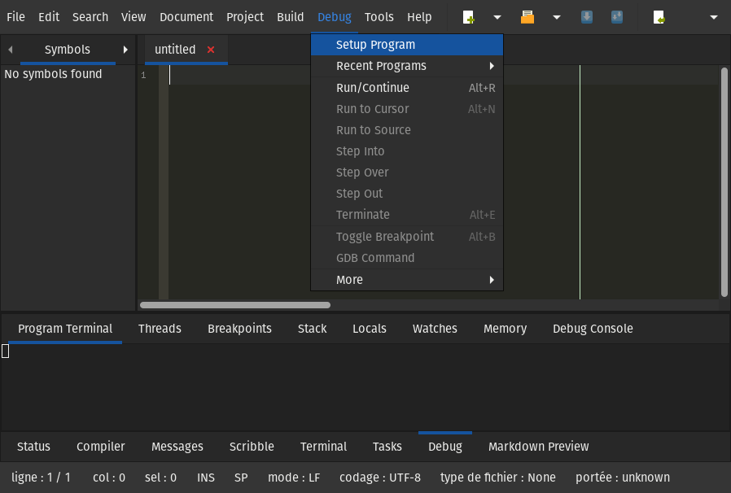
You can find the plugin's documentation here : https://plugins.geany.org/scope.html
.gdbinit
Create a .gdbinit file at the root of your project with the following content, adapting the path to your elf file and the gdb server's ip.
1 2 3 4 | |
Plugin configuration
In Geany : Debug > Setup Program :
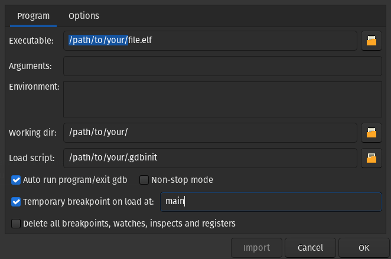
Beginning Debugging
Launch pcsx-redux, then run the debugger from your IDE. It should load the elf file, and execute until the next breakpoint.
Starting debugging in Geany
Source :
https://archive.org/details/pcsx_redux_geany_gdb
Additional tools
https://github.com/cyrus-and/gdb-dashboard/
Mips & api
Mips API
Description
PCSX-Redux has a special API that mips binaries can use :
1 2 3 4 5 6 | |
The API needs DEV8/EXP2 (1f802000 to 1f80207f), which holds the hardware register for the bios POST status, to be expanded to 1f8020ff.
Thus the need to use a custom crt0.s if you plan on running your code on real hardware.
The default file provided with the Nugget+PsyQ development environment does that:
1 2 3 4 5 6 7 8 9 10 11 | |
Functions
The following functions are available :
| Function | Usage |
|---|---|
pcsx_putc(int c) |
Print ASCII character with code c to console/stdout. |
pcsx_debugbreak() |
Break execution (Pause emulation). |
pcsx_exit(int code) |
Exit emulator and forward code as exit code. |
pcsx_message(const char* msg) |
Create a UI dialog displaying msg |
pcsx_present() |
Returns 1 if code is running in PCSX-Redux |
Example of a UI dialog created with pcsx_message() :
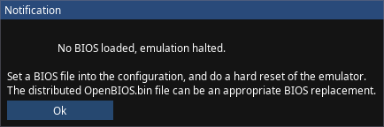
Cpu, trace & dump
Dumping a CPU trace to a file
Setup
In PCSX-Redux, make sure Debug > Show logs is enabled.
In the 'Logs' window, hide all logs : Displayed > Hide all
To avoid unnecessary noise, you can also skip ISR during CPU traces : Special > Skip ISR during CPU traces
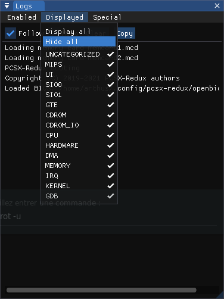 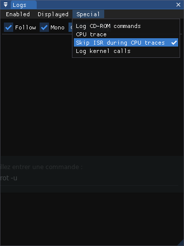
Begin dump
To dump the CPU traces, launch pcsx-redux with the following command :
1 2 3 | |
You can use additional flags to launch an executable/disk image in one go, e.g :
1 | |
Source
https://discord.com/channels/642647820683444236/663664210525290507/882608398993063997
Web & server
Web server
A web server can be activated. This allows the use of a REST api to access various features. The server only handles up to HTTP/1.1, without SSL support.
Activation
You can activate the web server by going to Configuration > Emulation > Enable Web Server
REST API
By default, the server listens for incoming connection on localhost:8080. The port can be changed in the same settings above.
These GET methods are available:
| URL | Function |
|---|---|
| /api/v1/gpu/vram/raw | Dump VRAM |
| /api/v1/cpu/ram/raw | Dump RAM |
The following POST methods are available:
/api/v1/gpu/vram/raw?x=<value>&y=<value>&width=<value>&height=<value>
The above needs to also send a form with binary contents. This will partially update the VRAM with the corresponding pixels. The updated rectangle has to be within the 1024x512 16bpp VRAM. The pixels need to be in 16bpp format, meaning the server is expecting exactly width * height * 2 bytes in the form data. The server will properly parse requests with Content-Type: multipart/form-data, but raw bytes in the request body without this header is also acceptable. Any invalid query will result in a 400 error.
Lua
Lua API
PCSX-Redux features a Lua API that's available through either a direct Lua console, or a Lua editor, both available through the Debug menu. The Lua VM runs on the main thread, the same one as the UI and the emulated MIPS CPU. As a result, care must be taken to not stall for too long, or the UI will become unresponsive. Using coroutines to handle long-running tasks is recommended, yielding periodically to let the UI perform some work too. The UI is probably going to run at 60FPS or so, which gives a ballpark of 15ms per frame.
Lua engine
The Lua engine that's being used is LuaJIT 2.1.0-beta3 compiled in Lua 5.2 compatibility mode. The Lua 5.1 user manual and LuaJIT user manual are recommended reads. In particular, the bindings heavily make use of LuaJIT's FFI capabilities, which allows for direct memory access within the emulator's process. This means there is little protection against dramatic crashes the LuaJIT FFI engine can cause into the emulator's process, and the user must pay extra attention while manipulating FFI objects. Despite that, the code tries as much as possible to sandbox what the Lua code does, and will prevent crashes on any recoverable exception, including OpenGL and ImGui exceptions.
Lua console
All of the messages coming from Lua should display into the Lua console directly. The input text there is a single line execution, so the user can type one-liner Lua statements and get an immediate result.
Lua editor
The editor allows for more complex, multi-line statements to be written, such as complete functions. The editor will by default auto save its contents on the disc under the filename pcsx.lua, which can potentially be a problem if the last statement typed crashed the emulator, as it'll be reloaded on the next startup. It might become necessary to either edit the file externally, or simply delete it to recover from this state.
The auto-execution of the editor permits for rapid development loop, with immediate feedback of what's done.
For complex projects however, it is recommended to split your work into sub-modules, and use the loadfile function to load them in your main code. This implies working on your project using an external editor.
API
Basic Lua
The LuaJIT extensions are fully loaded, and can be used globally. Most of the standard Lua libraries are loaded, and are usable. The require function exists, but isn't recommended as the loading of external DLLs might be difficult to properly accomplish. Loading pure Lua files is fine. The ffi table is loaded globally, there is no need to require it, but it'll work nonetheless. As a side-effect of Luv, Lua-compat-5.3 is loaded.
Dear ImGui
A good portion of ImGui is bound to the Lua environment, and it's possible for the Lua code to emit arbitrary widgets through ImGui. It is advised to consult the user manual of ImGui in order to properly understand how to make use of it. The list of current bindings can be found within the source code. Some usage examples will be provided within the case studies.
OpenGL
OpenGL is bound directly to the Lua API through FFI bindings, loosely inspired and adapted from LuaJIT-OpenCL. Some usage examples can be seen in the CRT-Lottes shader configuration page.
Luv
For network access and interaction, PCSX-Redux uses libuv internally, and this is exposed to the Lua API through Luv
Zlib
The Zlib C-API is exposed through FFI bindings.
FFI-Reflect
The FFI-Reflect library is loaded globally as the reflect symbol. It's able to generate reflection objects for the LuaJIT FFI module.
PPrint
The PPrint library is loaded globally as the pprint symbol. It's a more powerful print function than the one provided by Lua, and can be used to print tables in a more readable way.
PCSX-Redux
Settings
All of the settings are exposed to Lua via the PCSX.settings table. It contains pseudo-tables that are reflections of the internal objects, and can be used to read and write the settings. The exact list of settings can vary quickly over time, so making a full list here would be fruitless. It is possible however to traverse the settings using pprint for example. The semantic of the settings is the same as from within the GUI, with the same caveats. For example, disabling the dynamic recompiler requires a reboot of the emulator.
ImGui interaction
PCSX-Redux will periodically try to call the Lua function DrawImguiFrame to allow the Lua code to draw some widgets on screen. The function will be called exactly once per actual UI frame draw, which, when the emulator is running, will correspond to the emulated GPU's vsync. If the function throws an exception however, it will be disabled until recompiled with new code.
Events Engine interaction & Execution Contexts
LuaJIT C callbacks aren't called from a safe execution context that can allow for coroutine resuming, and luv's execution context doesn't have any error handling.
It is possible to defer executing code to the main loop of PCSX, which can (a) resume coroutines and (b) execute code in a safe context. The function PCSX.nextTick(func) will execute the given function in the next main loop iteration. Here's some examples of how to use it:
1 2 3 4 5 6 7 8 9 10 | |
1 2 3 4 5 6 7 8 9 10 11 12 13 14 15 16 17 18 19 20 21 22 23 24 25 26 27 | |
Of course, this can also delay processing significantly, as the main loop is usually bound to the speed of the UI, which can mean up to 13ms of delay.
File API
While the normal Lua io API is loaded, there's a more powerful API that's more tightly integrated with the rest of the PCSX-Redux File handling code. It's an abstraction class that allows seamless manipulation of various objects using a common API.
The File objects have different properties depending on how they are created and their intention. But generally speaking, the following rules apply:
- Files are reference counted. They will be deleted when the reference count reaches zero. The Lua garbage collector will only decrease the reference count.
- Whenever possible, writes are deferred to an asynchronous thread, making writes return basically instantly. This speed up comes at the trade off of data integrity, which means writes aren't guaranteed to be flushed to the disk yet when the function returns. Data will always have integrity internally within PCSX-Redux however.
- Some File objects can be cached. When caching, reads and writes will be done transparently, and the cache will be used instead of the actual file. This will make reads return basically instantly too.
- The Read and Write APIs can haul LuaBuffer objects. These are Lua objects that can be used to read and write data to the file. You can construct one using the
Support.NewLuaBuffer(size)function. They can be cast to strings, and can be used as a table for reading and writing bytes off of it, in a 0-based fashion. The length operator will return the size of the buffer. The methods:maxsize()and:resize(size)are available. - If the file isn't closed when the file object is destroyed, it'll be closed then, but letting the garbage collector do the closing is not recommended. This is because the garbage collector will only run when the memory pressure is high enough, and the file handle will be held for a long time.
- When using streamed functions, unlike POSIX files handles, there's two distinct seeking pointers: one for reading and one for writing.
All File objects have the following API attached to them as methods:
Closes and frees any associated resources. Better to call this manually than letting the garbage collector do it:
1 | |
Reads from the File object and advances the read pointer accordingly. The return value depends on the variant used.
1 2 3 | |
Reads from the File object at the specified position. No pointers are modified. The return value depends on the variant used, just like the non-At variants above.
1 2 3 | |
Writes to the File object. The non-At variants will advances the write pointer accordingly. The At variants will not modify the write pointer, and simply write at the requested location. Returns the number of bytes written. The string variants will in fact take any object that can be transformed to a string using tostring().
1 2 3 4 5 6 | |
Some APIs may return a Slice object, which is an opaque buffer coming from C++. It's possible to write a slice to a file in a zero-copy manner:
1 2 | |
After which, the slice will be consumed and not reusable. The object is convertible to a string, and also has two members: data, which is a const void*, and size. Once consumed, the size of a slice will go down to zero.
The following methods manipulate the read and write pointers. All of them return their corresponding pointer. The wheel argument can be of the values 'SEEK_SET', 'SEEK_CUR', and 'SEEK_END', and will default to 'SEEK_SET'.
1 2 3 4 | |
These will query the corresponding File object.
1 2 3 4 5 6 7 8 | |
If applicable, this will start caching the corresponding file in memory.
1 | |
Same as above, but will suspend the current coroutine until the caching is done. Cannot be used with the main thread.
1 | |
Duplicates the File object. This will re-open the file, and possibly duplicate all ressources associated with it.
1 | |
Creates a read-only view of the file starting at the specified position, spanning the specified length. The view will be a new File object, and will be a view of the same underlying file. The default values of start and length are 0 and -1 respectively, which will effectively create a view of the entire file. The view may have less features than the underlying file, but will always be seekable, and keep its seeking position independent of the underlying file. The view will hold a reference to the underlying file.
1 | |
In addition to the above methods, the File API has these helpers, that'll read or write binary values off their corresponding stream position for the non-At variants, or at the indicated position for the At variants. All the values will be read or store in Little Endian, regardless of the host's endianness.
1 2 3 4 5 6 7 8 | |
The Lua VM can create File objects in different ways:
1 2 3 4 | |
The open function will function on filesystem and network URLs, while the buffer function will generate a memory-only File object that's fully readable, writable, and seekable. The type argument of the open function will determine what happens exactly. It's a string that can have the following values:
READ: Opens the file for reading only. Will fail if the file does not exist. This is the default type.TRUNCATE: Opens the file for reading and writing. If the file does not exist, it will be created. If it does exist, it will be truncated to 0 size.CREATE: Opens the file for reading and writing. If the file does not exist, it will be created. If it does exist, it will be left untouched.READWRITE: Opens the file for reading and writing. Will fail if the file does not exist.DOWNLOAD_URL: Opens the file for reading only. Will immediately start downloading the file from the network. The curl is the backend for this feature, and its url schemes are supported. The progress of the download can be monitored with the:cacheProgress()method.DOWNLOAD_URL_AND_WAIT: As above, but suspends the current coroutine until the download is done. Cannot be used with the main thread.ACQUIRE: Only valid forbuffer. See below.
When calling buffer() with no argument, this will create an empty read-write buffer. When calling it with a pointer and a size, this will have the following behavior, depending on type:
- READWRITE (or no type): The memory passed as an argument will be copied first.
- READ: The memory passed as an argument will be referenced, and the lifespan of said memory needs to outlast the File object. The File object will be read-only.
- ACQUIRE: It will acquire the pointer passed as an argument, and free it later using free(), meaning it needed to be allocated using malloc() in the first place.
The uvFifo function will create a File object that will read from and write to the specified TCP address and port after connecting to it. The :failed() method will return true in case of a connection failure. The address is a string, and must be a strict IP address. The port is a number. As the name suggests, this object is a FIFO, meaning that incoming bytes will be consumed by any read operation. The :size() method will return the number of bytes in the FIFO. Writes will be immediately sent over. There are no reception guarantees, as the other side might have disconnected at any point. The :eof() method will return true when the opposite end of the stream has been disconnected and there's no more bytes in the FIFO.
Iso files
There is some limited API for working with ISO files.
PCSX.getCurrentIso()will return anIsoobject representing the currently loaded ISO file by the emulator. The following methods are available:
1 2 3 | |
The :open method has some magic built-in. The size argument is optional, and if missing, the code will attempt to guess the size of the underlying file within the Iso. This can only work on MODE2 FORM1 or FORM2 sectors, and will result in a failed File object otherwise. The mode argument is optional, and can be one of the following:
'GUESS': will attempt to guess the mode of the file. This is the default.'RAW': the returned File object will read 2352 bytes per sector.'M1': the returned File object will read 2048 bytes per sector.'M2_RAW': the returned File object will read 2336 bytes per sector. This can't be guessed. This is useful for extracting STR files that require the subheaders to be present.'M2_FORM1': the returned File object will read 2048 bytes per sector.'M2_FORM2': the returned File object will read 2324 bytes per sector.
The resulting File object will cache a single full sector in memory, meaning that small sequential reads won't read the same sector over and off from the disk.
The ISOReader object has the following methods:
1 | |
Events
The Lua code can listen for events broadcasted from within the emulator. The following function is available to register a callback to be called when certain events happen:
1 | |
The callback function will be called from an unsecured environment, and it is advised to delegate anything complex or risky enough to PCSX.nextTick.
The eventName argument is a string that can have the following values:
Quitting: The emulator is about to quit. The callback will be called with no arguments. This is where you'd need to close libuv objects held by Lua through luv in order to allow the emulator to quit gracefully. Otherwise you may soft lock the application where it'll wait for libuv objects to close.IsoMounted: A new ISO file has been mounted into the virtual CDRom drive. The callback will be called with no arguments.GPU::Vsync: The emulated GPU has just completed a vertical blanking interval. The callback will be called with no arguments.ExecutionFlow::ShellReached: The emulation execution has reached the beginning of the BIOS' shell. The callback will be called with no arguments. This is the moment where the kernel is properly set up and ready to execute any arbitrary binary. The emulator may use this event to side load binaries, or signal gdb that the kernel is ready.ExecutionFlow::Run: The emulator resumed execution. The callback will be called with no arguments. This event will fire when callingPCSX.resumeEmulator(), when the user presses Start, or other potential interactions.ExecutionFlow::Pause: The emulator paused execution. The callback will be called with a table that contains a boolean namedexception, indicating if the pause is the result of an execution exception within the emulated CPU. This event will fire on breakpoints too, so if breakpoints have Lua callbacks attached on them, they will be executed too.ExecutionFlow::Reset: The emulator is resetting the emulated machine. The callback will be called with a table that contains a boolean namedhard, indicating if the reset is a hard reset or a soft reset. This event will fire when callingPCSX.resetEmulator(), when the user presses Reset, or other potential interactions.GUI::JumpToPC: The UI is being asked to move the assembly view cursor to the specified address. The callback will be called with a table that contains a number namedpc, indicating the address to jump to.GUI::JumpToMemory: The UI is being asked to move the memory view cursor to the specified address. The callback will be called with a table that contains a number namedaddress, indicating the address to jump to, andsize, indicating the number of bytes to highlight.Keyboard: The emulator is dispatching keyboard events. The callback will be called with a table containing four numbers:key,scancode,action, andmods. They are the same values as the glfw callback set byglfwSetKeyCallback.
Memory and registers
The Lua code can access the emulated memory and registers directly through some FFI bindings:
PCSX.getMemPtr()will return acdata[uint8_t*]representing up to 8MB of emulated memory. This can be written to, but careful about the emulated i-cache in case code is being written to.PCSX.getRomPtr()will return acdata[uint8_t*]representing up to 512kB of the BIOS memory space. This can be written to.PCSX.getScratchPtr()will return acdata[uint8_t*]representing up to 1kB for the scratchpad memory space.PCSX.getRegisters()will return a structured cdata representing all the registers present in the CPU:
1 2 3 4 5 6 7 8 9 10 11 12 13 14 15 16 17 18 19 20 21 22 23 24 25 26 27 28 29 30 | |
Constants
The table PCSX.CONSTS contains numerical constants used throughout the rest of the API. Keeping an up to date list here is too exhausting, and it's simpler to print them using pprint(PCSX.CONSTS).
Pads
You can access the pads API through PCSX.SIO1.slots[s].pads[p] where s is the slot number and p is the pad number, both indexed from 1, Lua-style. So PCSX.SIO1.slots[1].pads[1] accesses the first pad, and PCSX.SIO1.slots[2].pads[1] accesses the second pad.
Each Pad table has the following functions:
1 2 3 | |
The button constants can be found in PCSX.CONSTS.PAD.BUTTON.
You can for instance press the button Down on the first pad using the following code:
1 | |
Execution flow
The Lua code has the following 4 API functions available to it in order to control the execution flow of the emulator:
PCSX.pauseEmulator()PCSX.resumeEmulator()PCSX.softResetEmulator()PCSX.hardResetEmulator()
It's also possible to manipulate savestates using the following two functions:
PCSX.createSaveState() -- returns a slice representing the savestatePCSX.loadSaveState(slice)
Messages
The globals print and printError are available, and will display logs in the Lua Console. You can also use PCSX.log to display a line in the general Log window. All three functions should behave the way you'd expect from a print function in Lua.
GUI
You can move the cursor within the assembly window and the first memory view using the following two functions:
PCSX.GUI.jumpToPC(pc)PCSX.GUI.jumpToMemory(address[, width])
GPU
You can take a screenshot of the current view of the emulated display using the following:
- PCSX.GPU.takeScreenShot()
This will return a struct that has the following fields:
1 2 3 4 5 | |
The Slice will contain the raw bytes of the screenshot data. It's meant to be written out using the :writeMoveSlice() method. The width and height will be the width and height of the screenshot, in pixels. The bpp will be either BPP_16 or BPP_24, depending on the color depth of the screenshot. The size of the data Slice will be height * width multiplied by the number of bytes per pixel, depending on the bpp.
Breakpoints
If the debugger is activated, and while using the interpreter, the Lua code can insert powerful breakpoints using the following API:
1 | |
Important: the return value of this function will be an object that represents the breakpoint itself. If this object gets garbage collected, the corresponding breakpoint will be removed. Thus it is important to store it somewhere that won't get garbage collected right away.
The only mandatory argument is address, which will by default place an execution breakpoint at the corresponding address. The second argument type is an enum which can be represented by one of the 3 following strings: 'Exec', 'Read', 'Write', and will set the breakpoint type accordingly. The third argument width is the width of the breakpoint, which indicates how many bytes should intersect from the base address with operations done by the emulated CPU in order to actually trigger the breakpoint. The fourth argument cause is a string that will be displayed in the logs about why the breakpoint triggered. It will also be displayed in the Breakpoint Debug UI. And the fifth and final argument invoker is a Lua function that will be called whenever the breakpoint is triggered. By default, this will simply call PCSX.pauseEmulator(). If the invoker returns false, the breakpoint will be permanently removed, permitting temporary breakpoints for example. The signature of the invoker callback is:
1 2 3 | |
The address parameter will contain the address that triggered the breakpoint. For 'Exec' breakpoints, this is going to be the same as the current pc, but for 'Read' and 'Write', it's going to be the actual accessed address. The width parameter will contain the width of the access that triggered the breakpoint, which can be different from what the breakpoint is monitoring. And the cause parameter will contain a string describing the reason for the breakpoint; the latter may or may not be the same as what was passed to the addBreakpoint function. Note that you don't need to strictly adhere to the signature, and have zero, one, two, or three arguments for your invoker callback. The return value of the invoker callback is also optional.
For example, these two examples are well formed and perfectly valid:
1 2 3 4 5 6 7 8 9 10 | |
The returned object will have a few methods attached to it:
:disable():enable():isEnabled():remove()
A removed breakpoint will no longer have any effect whatsoever, and none of its methods will do anything. Remember it is possible for the user to still manually remove a breakpoint from the UI.
Case studies
Spyro: Year of the Dragon
By looking up some of the gameshark codes for this game, we can determine the following memory addresses:
0x8007582cis the number of lives.0x80078bbcis the health of Spyro.0x80075860is the number of unspent jewels available to the player.0x80075750is the number of dragons Spyro released so far.
With this, we can build a small UI to visualize and manipulate these values in real time:
1 2 3 4 5 6 7 8 9 10 11 12 13 14 15 16 17 18 19 20 21 22 23 24 25 26 27 28 29 30 31 32 33 34 35 36 37 38 39 40 41 42 43 44 45 46 47 48 49 50 51 52 53 54 55 | |
You can see this code in action in this demo video.
Crash Bandicoot
Using exactly the same as above, we can repeat the same sort of cheats for Crash Bandicoot. Note that when the CPU is being emulated, the DrawImguiFrame function will be called at least when the emulation is issuing a vsync event. This means that cheat codes that regularly write to memory during vsync can be applied naturally.
1 2 3 4 5 6 7 8 9 10 11 12 13 14 15 16 17 18 19 20 21 22 23 24 25 | |
Crash Bandicoot - Using Conditional BreakPoints
This example will showcase using the BreakPoints and Assembly UI, as well as using the Lua console to manipulate breakpoints.
Crash Bandicoot 1 has several modes of execution. These modes tell the game what to do, such as which level to load into, or to load back into the map. These modes are passed to the main game loop routine as an argument. Due to this, manually manipulating memory at the right time with the correct value to can be tricky to ensure the desired result.
The game modes are listed here.
In Crash 1, there is a level that was included in the game but cut from the final level selection due to difficulty, 'Stormy Ascent'. This level can be accessed only by manipulating the game mode value that is passed to the main game routine. There is a gameshark code that points us to the memory location and value that needs to be written in order to set the game mode to the Story Ascent level.
30011DB0 0022- This is telling us to write the value 0x0022 at memory location0x8001db00x0022 is the value of the Stormy Ascent level we want to play.
The issue is that GameShark uses a hook to achieve setting this value at the correct time. We will set up a breakpoint to see where the main game routine is.
Setting the breakpoint can be done through the Breakpoint UI or in the Lua console. There is a link to a video at the bottom of the article showing the entire procedure.
Breakpoints can alternatively be set through the Lua console. In PCSX-Redux top menu, click Debug → Show Lua Console
We are going to add a breakpoint to pause execution when memory address 0x8001db0 is read. This will show where the main game loop is located in memory.
In the Lua console, paste the following hit enter.
1 | |
You should see where the breakpoint was added in the Lua console, as well as in the Breakpoints UI. Note that we need to assign the result of the function to a variable to avoid garbage collection.
Now open Debug → Show Assembly
Start the emulator with Crash Bandicoot 1 SCUS94900
Right before the BIOS screen ends, the emulator should pause. In the assembly window we can see a yellow arrow pointing to 0x80042068. We can see this is a lw instruction that is reading a value from 0x8001db0. This is the main game loop reading the game mode value from memory!
Now that we know where the main game loop is located in memory, we can set a conditional breakpoint to properly set the game mode value when the main game routine is executed.
This breakpoint will be triggered when the main game loop at 0x80042068 is executed, and ensure the value at 0x80011db0 is set to 0x0022
In the Lua console, paste the following and hit enter.
1 2 3 | |
We can now disable/remove our Read breakpoint using the Breakpoints UI, and restart the game. Emulation → Hard Reset
If the Emulator status shows Idle, click Emulation → Start
Once the game starts, instead of loading into the main menu, you should load directly into the Stormy Ascent level.
You can see this in action in this demo video.
Openbios
Openbios
Openbios is, as its name implies, an open-source alternative to a retail PSX bios that can be non-trivial to dump.
Purposes of Openbios
- Educational
- Ease of distribution
- Automated testing
See this page for more details.
Building
It is compiled together with pcsx-redux or can be compiled on its own.
See the corresponding sections in Compiling for instructions.
The result of the compilation should be a file called openbios.elf that contains all useful debugging symbols,
and a file called openbios.bin which can be used in emulators or even burned to a chip and placed on a retail console.
Status
This subproject is still under construction, but is fairly functional and usable. OpenBIOS does almost all the same things as the retail BIOS does when booting, and implements most of its features.
Many games are booting and working properly with this code.
It can be used in emulators or on the real console, either while replacing the rom chip, or by using the "cart" build and programming the flash chip of a cheat cart with the result.
Organization
The BIOS is split in two major parts: the low level code for the bios itself, and the shell, which is the binary that's being loaded into memory at boot time by the bios, to display the SONY sound and logo, and has a small utility menu for playing audio discs, or shuffling around memory cards.
While the first part is the main one that's being targeted here, the second one isn't currently present. This may change in the future, but this isn't currently the focus of this project.
The original code was most likely chunked into several sub-projects, that were all linked together like a giant patchwork. This approach is less readable, and for this reason, we're not going to do this.
However this will result in the ROM/RAM split to be less obvious, and slower at times than the original. Tuning of the hot functions is eventually required.
Technicalities
The code has been rewritten based off the reverse engineering of a dump of the BIOS of an american SCPH-7001 machine. MD5sum: 1e68c231d0896b7eadcad1d7d8e76129
The ghidra database for it is currently being hosted on a server, alongside a few other pieces of software being reversed. Contact one of the authors if you want access.
Commentary
The retail PlayStation BIOS code is a constellation of bugs and bad design.
The fact that the retail console boots at all is nothing short of a miracle. Half of the provided libc in the A0 table is buggy.
The BIOS code is barely able to initialize the CD-Rom, and read the game's binary off of it to boot it; anything beyond that will be crippled with bugs.
And this only is viable if you respect a very strict method to create your CD-Rom. The memory card and gamepad code is a steaming-hot heap of human excrement.
The provided GPU stubs are inefficient at best.
The only sane thing that any software running on the PlayStation ought to do is to immediately disable interrupts, grab the function pointer located at 0x00000310 for FlushCache,
in order put it inside a wrapper that disables interrupts before calling it, and then trash the whole memory to install its own code.
The only reason FlushCache is required from the retail code is because since the function will unplug the main memory bus off the CPU in order to work, it HAS to run from the 0xbfc memory map, which will still be connected.
Anything else from the retail code is virtually useless, and shouldn't be relied upon.
Legality
Disclaimer: the author is not a lawyer, and the following statement hasn't been reviewed by a professional of the law, so the rest of this document cannot be taken as legal advice.
As explained above, this code has been written using disassembly and reverse engineering of a retail bios the author dumped from a second hand console. The same exact methodology was employed by Connectix for their PS1 bios. The conclusion of their lawsuit, and that of Sega v. Accolade seems to indicate that this project here follows and is impacted by the same doctrine.